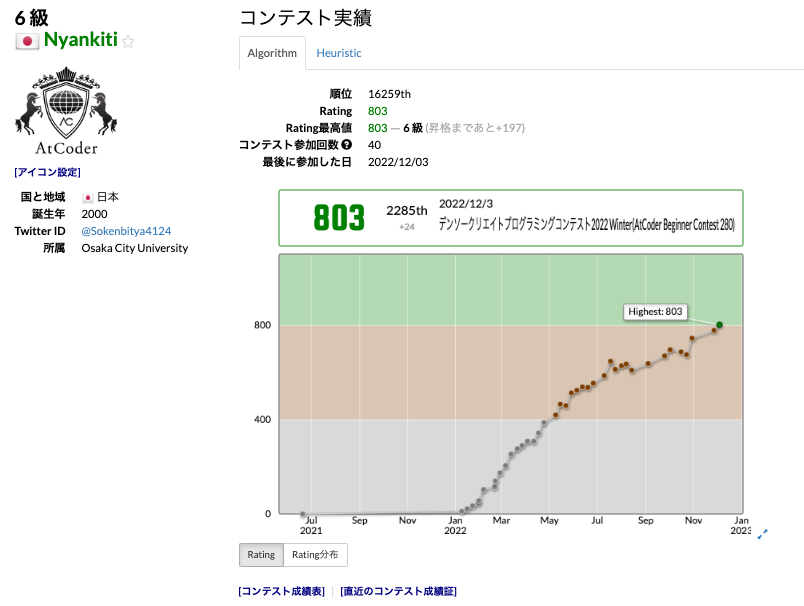

atcoder 入緑記事(2022/12/6)#
2022 年 1 月より AtCoder を始め、12 月 3 日の ABC280 で入緑することができましたので、現状の振り返りと、今までの取り組みを紹介します！
自分は、非情報系の学部 4 年で、同じように情報系を専攻していない方に届けばと思い記事にしてみます！

TL;DL#
非情報系だが、競プロに興味があるという方には、以下の順番で勉強することをお勧めします
一つの言語(C++もしくは Python がお勧め)で、A 問題のような入出力を処理できる基礎知識がつくまで Progate などで勉強する
ABC への出場を習慣づける(復習はYoutube の解説放送がお勧め)
以下の二つの本で競プロに必要な知識を効率的に学ぶ。 『問題解決のための「アルゴリズム × 数学」が基礎からしっかり身につく本』 『競技プログラミングの鉄則 ~アルゴリズム力と思考力を高める 77 の技術~』
時系列で自己紹介#
2019 年 応用化学系の大学に入学
2020 年 4 月 コロナをきっかけにパソコンを購入、プログラミングの独学を開始
2020 年 8 月 プログラミングを用いたバイトを開始(PHP Laravel, Javascript React などを使用)
2021 年 基本情報、応用情報を取得
2022 年 1 月 AtCoder 本格参戦
2022 年 5 月 入茶
2022 年 2 月 入緑
⇒ 23 卒で web 系の開発職に就職予定
なぜ AtCoder を始めたか#
来年から就職予定の企業のエンジニアさんに、学生のうちにやっておくべきことを伺ったところ、競プロをおすすめされたのが最も大きな動機です。
ただ、プログラミングの勉強を始めた頃からアルゴリズムや数学への憧れがあり、いつかしっかり勉強したいな、という思いはずっとあった気がします。
AtCoder 緑とは ??#
以下の記事が参考になると思います。AtCoder 高橋社長の 2019 年時点のそれぞれのレーティングのレベル感が言及されています。
使用言語、環境#
使用言語は python(pypy)です。
以下の記事を参考に docker 環境を構築して、cli で問題とテストケースを取得、コピペで提出というスタイルで出場しています。
Docker で AtCoder ができる環境を作る【Python・C++】 - Qiita
python だとスピードが出ない、かつ、解説が C++で書かれてる場合が多いので、いずれ C++ に移行したいとも考えております。
勉強方法#
udemy 講座
ソートのソの字も知らない状態から、アルゴリズムに関して最初に勉強した講座です。
現役シリコンバレーエンジニアが教えるアルゴリズム・データ構造・コーディングテスト入門AOJ(Aizu Online Judge)
以下のコースを 80%ほど完了しました。アルゴリズムの基礎について網羅できるように問題が選定してあり、とても勉強になりました(茶色に入るだけなら全て理解する必要は全くない)
ALDS1_1 < Lesson < Courses | Aizu Online Judge競プロ典型 90 問の ★2,★3,★4 を解く
解説が図をたくさん使用した一枚の画像に直感的に収められており、抜群にわかりやすいです。
競プロ典型 90 問 - AtCoderABC コンテストに出場する
コンテストの復習では、AtCoder Liveやかつっぱ競プロなど動画で学ぶことが多いです。sunuke さん、かつっぱさんには感謝しかありません、、、、
その他、Udemy の他の講座を買ってみたり、ピンポイントで勉強する際は記事や Youtube もよく使っています。
現在の実力#
現在は、ABC の C 問題は 75%くらいの確率で解くことができ、D 問題はたまに解けるっといったレベル感です。直近ので出た ABC では奇跡的に 3 回連続で A,B,C,D の 4 完をすることができています。
E 問題は練習でも解いたことがありません笑
茶 ⇒ 緑 のためにやったこと。#
上で紹介した、E869120氏によるアルゴ数学本と鉄則本に出会えたのが大きかったと思います。競プロの問題に慣れるための考え方が網羅されていて、この本がある時代に競プロを初めて良かったとつくづく思っています。
今後の目標#
在学中に入緑という目標は達成できたので、今後はあまり気張らずに、楽しくゆっくり水色を目指そうと思います。競技プログラミングの楽しさがわかったので、kaggle とかにも挑戦したいな〜っとなんとなく考えています。
好奇心旺盛で、Web 開発、低レイヤー、セキュリティ、ブロックチェーン、AI 関連など、学びたいことが多いので、社会人になっても気ままに学習を続けていけたらなと思っています。